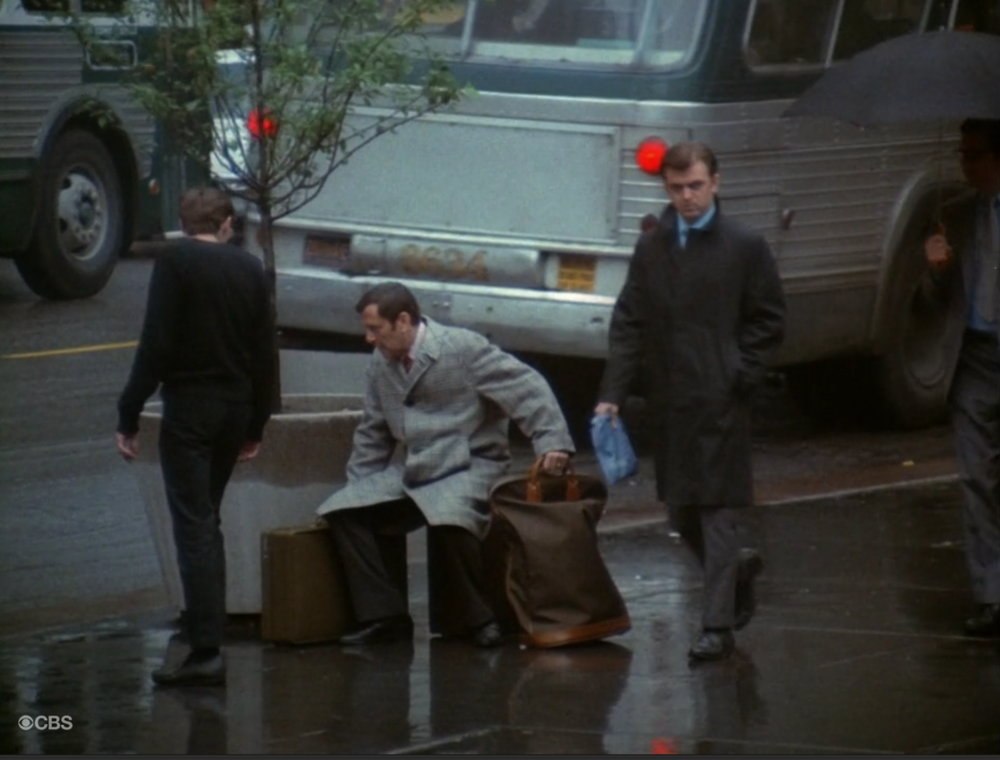
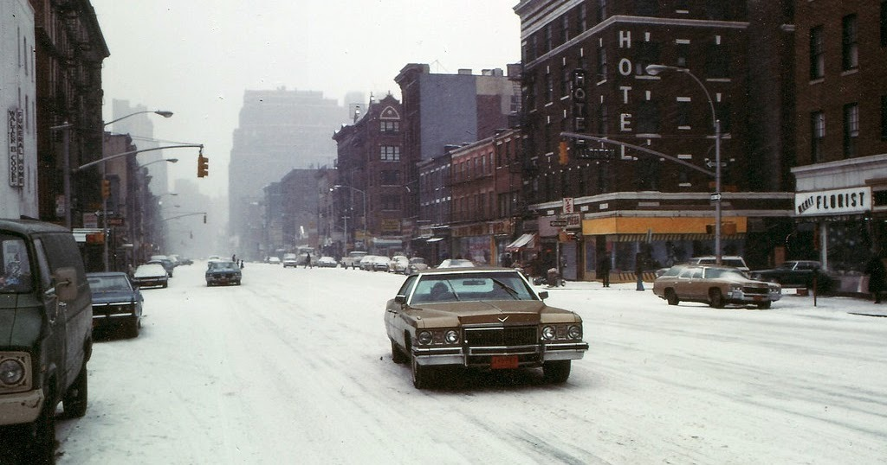
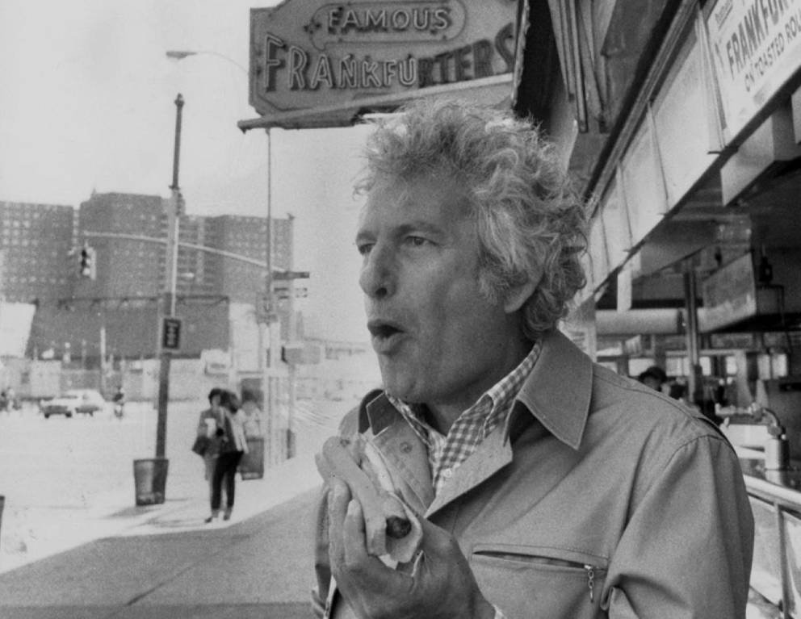

Bruce Gilden Santa Waiting for the Subway, New York City 1968
Bruce Gilden Santa Waiting for the Subway, New York City 1968

Times Square, 1979

Hawking hot dogs on West Street in 1979.

1978 Manhattan

Jane Fonda And Her Daughter Vanessa Vadim at Central Park in New York, 1969. Photos by Paul Slade (Paris Match)

42nd Street in the 70s

Herman’s Sporting Goods in the 70s

Times Square porn
1980, after John Lennon got killed.

My favorite moment from “The Odd Couple” opening credits. The guy on the left, clearly unaware that this is being filmed, stops to see if Tony Randall is okay.

8th Ave and 22nd St, 1976

Ed Molinari Writer Joseph Heller Eating a Nathan’s Famous Hot Dog While Visiting His Native Coney Island, Brooklyn, New York 1979
“Clevinger was dead. That was the basic flaw in his philosophy.” Joseph Heller, “Catch 22” 1961
Helen Levitt Subway Portrait, New York City 1978
Helen Levitt Subway Portrait, New York City c.1978

Helen Levitt Voice of the Ghetto, New York City 1978

Jack Garofalo, Harlem, 1970

FAO Schwarz in 1973

Amsterdam and 84th, 1977